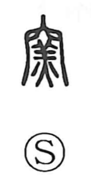

窯

Kun: kama | On: yo
kiln ・ oven ・ furnace
Explanation
Shirakawa takes 窯 as a phono‑semantic character. The upper part, 穴, sketches the arched chamber of a kiln or oven, and the row of dots below is 火, the fire burning inside. The inner element containing 羊 functions as the phonetic, giving the on‑reading yō. An older graph, 匋, already depicted the act of firing pottery: a clay vessel 缶 set over a kiln, vividly expressing “to bake in a kiln.” Although that pictorial form seems original, the form 窯 became standard. From this come expressions like 窯変, the unpredictable changes of glaze and color produced in firing, and 窯業, the industry that fires clay into ceramics, bricks, and tiles.